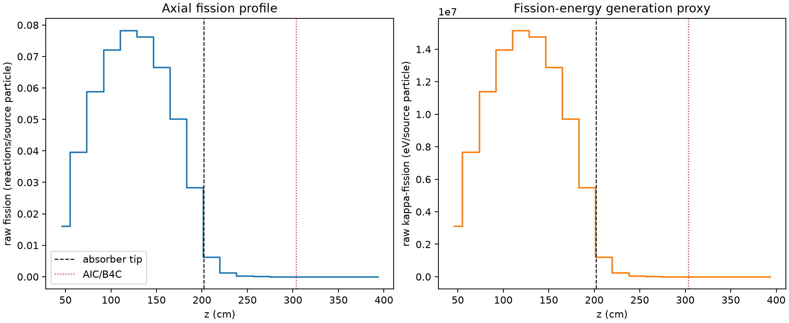
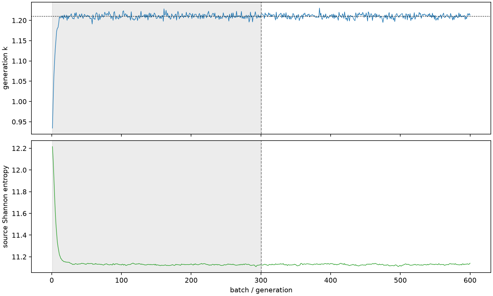

| field | value |
|---|---|
| experiment | V2-STAGE_128_OGRENCI_04-0002 |
| k | 1.210050960021317 |
| MC standard error | 0.0001936581311942005 |
| seconds | 6459.565212167 |
| acceptance | not_assessed |
| convergence | review_required |
Completed is output integrity only; physical and statistical review required. Zero tallies do not prove zero production or zero uncertainty.
| diagnostic | value |
|---|---|
| geometric fuel voxels | 5280 |
| zero fission tally voxels | 903 |
| low signal fuel voxels | 1911 |
| low signal fission share | 6.394294593262908e-05 |
| low signal kappa share | 6.397057785948978e-05 |
| important fission share | 0.9501943780189959 |
| previous filter included | 3369 |
| duration estimate s | 1562.5173488400023 |
| actual minus estimate s | 4897.047863326998 |
| fission relative MC error | statistics |
|---|---|
| all_geometric_fuel | {"voxels": 5280, "positive_mean_voxels": 4377, "zero_mean_voxels": 903, "undefined_relative_error_voxels": 903, "median": 0.011849421607223928, "p95": 0.9999999999999999, "maximum": 1.0000000000000002} |
| low_signal | {"voxels": 1911, "positive_mean_voxels": 1008, "zero_mean_voxels": 903, "undefined_relative_error_voxels": 903, "median": 0.6868025996764178, "p95": 1.0, "maximum": 1.0000000000000002} |
| important_95pct | {"voxels": 2106, "positive_mean_voxels": 2106, "zero_mean_voxels": 0, "undefined_relative_error_voxels": 0, "median": 0.006293221250476261, "p95": 0.009332800958782847, "maximum": 0.011269309425183085} |
| outside_previous_filter | {"voxels": 1911, "positive_mean_voxels": 1008, "zero_mean_voxels": 903, "undefined_relative_error_voxels": 903, "median": 0.6868025996764178, "p95": 1.0, "maximum": 1.0000000000000002} |
| kappa_fission relative MC error | statistics |
|---|---|
| all_geometric_fuel | {"voxels": 5280, "positive_mean_voxels": 4377, "zero_mean_voxels": 903, "undefined_relative_error_voxels": 903, "median": 0.011833390352652382, "p95": 0.9999999999999999, "maximum": 1.0000000000000002} |
| low_signal | {"voxels": 1911, "positive_mean_voxels": 1008, "zero_mean_voxels": 903, "undefined_relative_error_voxels": 903, "median": 0.6867545219908113, "p95": 1.0, "maximum": 1.0000000000000002} |
| important_95pct | {"voxels": 2106, "positive_mean_voxels": 2106, "zero_mean_voxels": 0, "undefined_relative_error_voxels": 0, "median": 0.006286688226527384, "p95": 0.009322515030826907, "maximum": 0.011256571094786916} |
| outside_previous_filter | {"voxels": 1911, "positive_mean_voxels": 1008, "zero_mean_voxels": 903, "undefined_relative_error_voxels": 903, "median": 0.6867545219908113, "p95": 1.0, "maximum": 1.0000000000000002} |
| axial bin | fission share | kappa-fission share |
|---|---|---|
| 1 | 0.03244746150533153 | 0.03244875227643058 |
| 2 | 0.08029300463674091 | 0.08029236826698707 |
| 3 | 0.1191072836364649 | 0.11910636814898691 |
| 4 | 0.14584112086335788 | 0.14584017779491987 |
| 5 | 0.15820289582507513 | 0.1582014702933269 |
| 6 | 0.15430329802827455 | 0.1543025442996613 |
| 7 | 0.13467877227967393 | 0.13467772568112163 |
| 8 | 0.10153925112407318 | 0.10153826559510039 |
| 9 | 0.05745659286944858 | 0.057456394851417354 |
| 10 | 0.012797220833437876 | 0.012801392332592188 |
| 11 | 0.002593589573422349 | 0.0025947071972954477 |
| 12 | 0.0005781908781815169 | 0.0005784452518570976 |
| 13 | 0.0001273790600765214 | 0.0001274318787688591 |
| 14 | 2.7746920352842896e-05 | 2.7760411829180724e-05 |
| 15 | 4.763996640011018e-06 | 4.765832497658434e-06 |
| 16 | 7.551127928074772e-07 | 7.559553364225913e-07 |
| 17 | 2.4419817430596685e-07 | 2.4462561481440133e-07 |
| 18 | 3.279193017853989e-07 | 3.2846274150091263e-07 |
| 19 | 1.0073917943442659e-07 | 1.0084351477435645e-07 |
| 20 | 0.0 | 0.0 |
Histories include the inactive-to-active transition at batch 300. kappa-fission approximates fission energy production, not total heat deposition.

